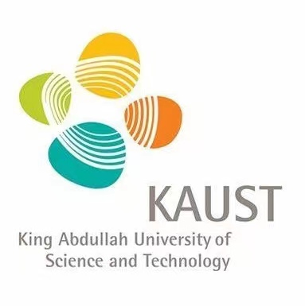
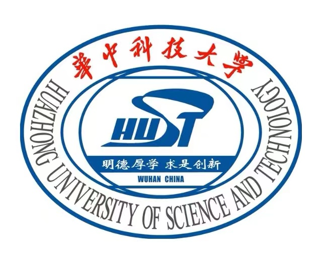
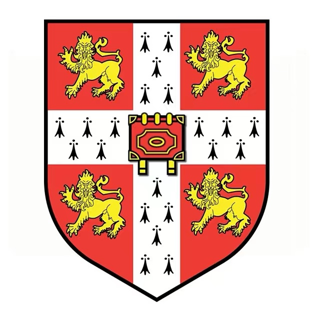
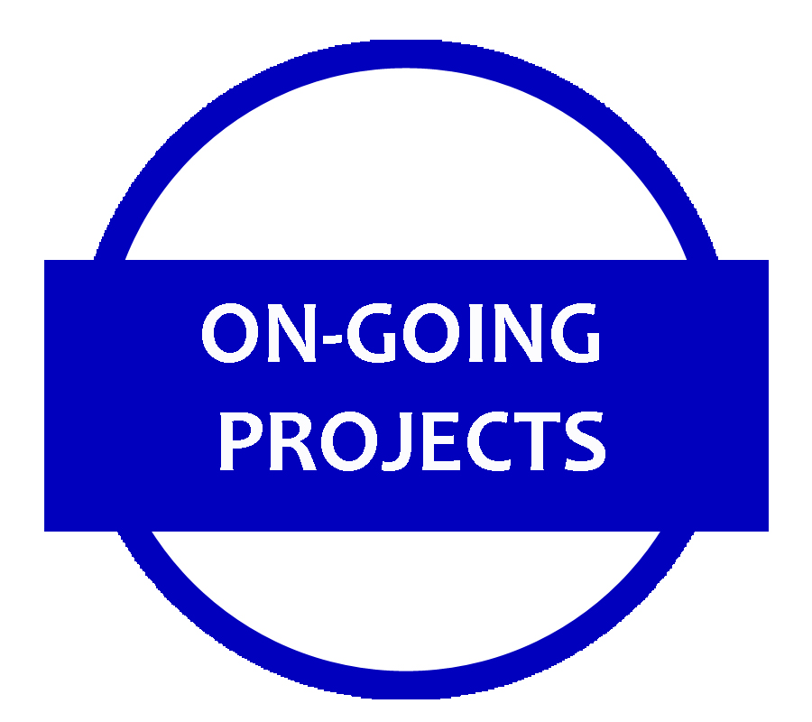

I am a fourth-year undergraduate student
at Huazhong University of Science & Technology (HUST),
working for a B.Eng. in Automation
in the School of Artificial Intelligence & Automation (AIA).
I work closely with
Prof. Kun He.
Currently, I am a member of
Embodied Perception and InteraCtion (EPIC) Lab,
Center on Frontiers of Computing Studies (CFCS),
Peking University,
working with Dr. Jiazhao Zhang and Prof. He Wang.
After that, I will work with
Prof. Bernard Ghanem
at King Abdullah University of Science & Technology (KAUST),
seeking for potential Ph.D. opportunities there.
Before that, I once worked with
Prof. Yang Cao
from HUST,
Prof. Pietro Lio
from Cambridge,
Dr. Jiali Bao
from Zhito Tech. .
I mainly focus on Computer Vision & Embodied AI:
- 3D Vision: Active Panoptic 3D Scene Understanding.
- Reinforcement Learning: RL in 3D Scenes and Tasks.
- Imbalanced Learning: AutoML for Imbalanced Learning.
Research Opportunities: I am open to collaboration and/or inquiry about my research and experience, please feel free to email me.
For junior undergraduate students from HUST, I am very happy to help you with your survival in HUST campus.
-
[01/03/2022] I will join Embodied Perception and InteraCtion (EPIC) Lab,
Center on Frontiers of Computing Studies (CFCS), Peking University, working with Dr.Jiazhao Zhang and Prof.
He Wang.
-
[10/07/2021] I will join AI Lab, Suzhou Zhito Technology as an algorithm engineer intern,
with Dr. Jiali Bao.
-
[10/01/2021] I will join Suzhou R&D Center, Changchun Yidong Clutch as a software engineer intern,
with Dr. Xianping Xie.
*represents equal contribution, #represents corresponding author.
|

|
SAMEN: Self-Adjusting Mutli-Expert Network for Imbalanced Learning
Fanpeng Meng*, Chenyu Zhou*, Jun Hou,
Kun He#
On Progress for the 11th International Conference on Learning Representations (ICLR 2023)
|
- Position: Summer Research Programme Student
- Supervisor: Prof. Pietro Lio
- Project: Human-Tracking Robot in Crowded Situation
-> Scoring A+ (1/26) Strong Recommendation
|
|
Suzhou Zhito Technology
Shanghai, China (Jul. 2021 - Sep. 2021)
- Position: Algorithm Engineering Intern in AI Lab
- Supervisor: Dr. Jiali Bao
- Orientation: SLAM & Learning-based Vision
Project: 3D Semantic Map for Suzhou Highway
|
|
Changchun Yidong Clutch CO.,LID
Suzhou, Jiangsu, China (Jan. 2021 - Mar. 2021)
- Position: Embedded Software Development Engineer Intern in Suzhou R&D Center
- Supervisor: Dr. Xianping Xie
- Orientation: Control System and Algorithm
Project: CPD Module for Automatic Clutch
|
|
Honors and Awards
-
Scholarship for Scientific and Technological Innovation, HUST (2020)
-
“Weipai” Seed Cup, HUST (2020) Rank2(2/174)
-
Renesas Cup Smart Car Competition, HUST (2019) Rank4(4/82)
-
National Olympiad in Informatics in Provinces (NOIP) (2018) First Prize
Talk
-
Vision in Scene Exploration
26/02/2022 EPIC-Lab Seminar, Peking University
[slides]
(Google Drive)
People
Supervisors
He Wang: Prof. from EPIC-Lab, CFCS, PKU
Yang Cao: Prof. from HUST
Pietro Lio: Prof. from Computer Lab, Cambridge
Collaborators
Chenyu Zhou: UG. HUST
Friends
Wenjie Qu: UG. HUST
Yanjie Ze: UG. SJTU
Zhe Wang: UG. PolyU